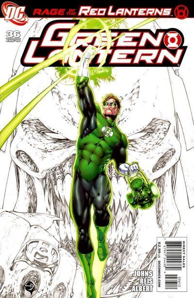

Reading Order
Rage of the Red Lanterns
Rage enters the spectrum, screaming.

2008 – 2009
Collected in Green Lantern: Rage of the Red Lanterns.
IssuesGreen Lantern #36–38 & Final Crisis: Rage of the Red Lanterns #1
Published2008 – 2009
WriterGeoff Johns
ArtistShane Davis, Ivan Reis
The story
The War of Light begins here. Atrocitus — survivor of the Manhunters' massacre — has forged rage into a Corps, and the Red Lanterns are everything the Greens are not: feral, vomiting blood, powered by purest hatred.
This is also where the Blue Lanterns debut, and where hope first proves it can do what willpower can't. The spectrum stops being theory and starts being war.
Key characters


Covers: DC Comics — non-commercial fan tribute.